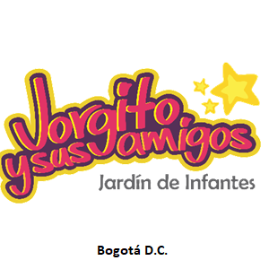

Dia del Deporte 2026
Pequeños Guerreros, Grandes Valores
Una muestra de Taekwondo infantil donde el juego, la disciplina y el acompañamiento hacen visible el crecimiento de los niños del Jardín Jorgito y sus amigos, con el apoyo del Club Gajog.
